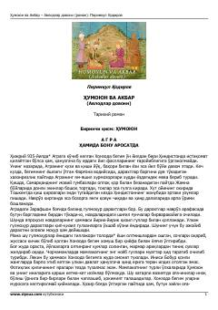

ҲВBoburiylar sulolasining Ҳиндистондаги murakkab hayoti va taqdiri haqidagi tarixiy roman.
Mazkur тарихий роман Ҳиндистонда Ҳумоюн ва Акбар hukmronligi davridagi murakkab siyosiy jarayonlar, o'zaro nizolar va sulolaviy taqdirlar haqida hikoya qiladi. Asarda Xonzoda begim hayoti, boburiylar sulolasining Hindiston tuprog'idagi faoliyati va shart-sharoitlari ta'sirli tasvirlangan.